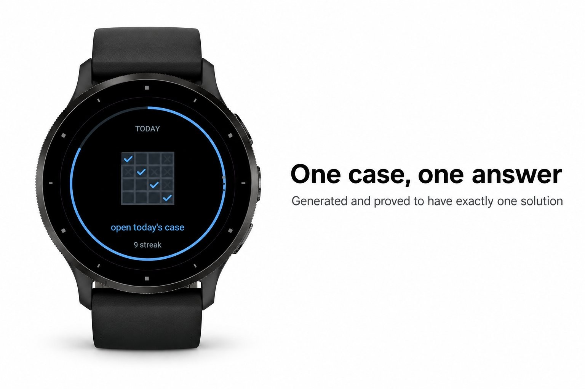
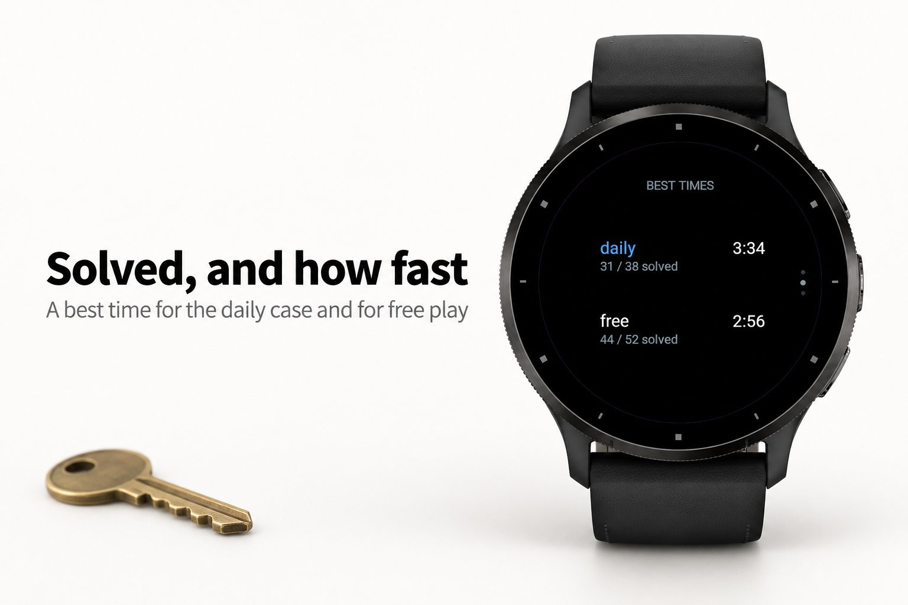
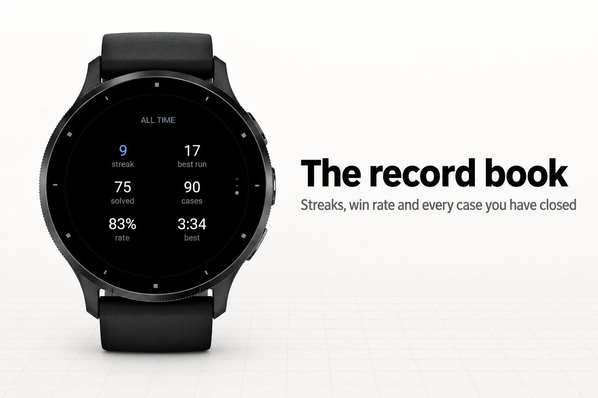
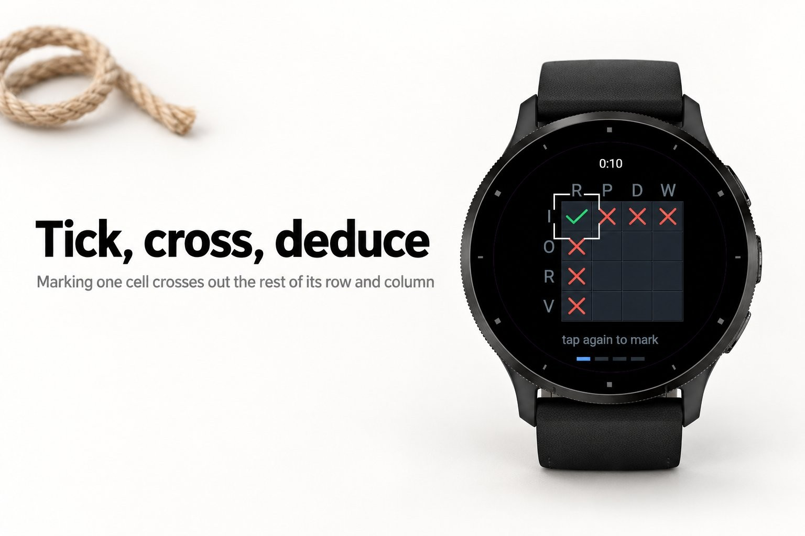
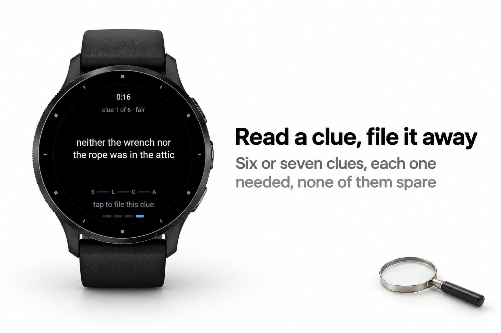

Games & puzzles · Device app
A logic case to solve, new every day.





A logic grid puzzle is worth solving only when two things are true of it: exactly one
answer fits the clues, and every clue is needed to get there. A puzzle book runs out
after sixty of them. Generated ones rarely run out, and rarely hold up either: half the
sheet turns out to be clues that were already implied by the clues above them.
Verdix picks the hidden truth first, four suspects paired to four weapons and four
rooms, and then builds the case backwards from it. Candidate clues, all of them true of
that truth, are handed to a solver one at a time until the solver can pin every cell
without guessing. Then the list is walked back through and every clue the solver turns
out not to need is thrown out. What that leaves is a case proved to have exactly one
answer, proved reachable by deduction alone, and stripped of anything decorative: take
away any single clue and it stops being solvable.
order and adjacency, weapon weight, exactly-one-of and if-then
and a drag are the same gesture until the moment it ends
around a fingertip, the second cycles it through tick, cross and unknown
later anyway; it can be switched off
and the grids fill in with the answer
Nothing but the watch. No phone, no signal, no account.